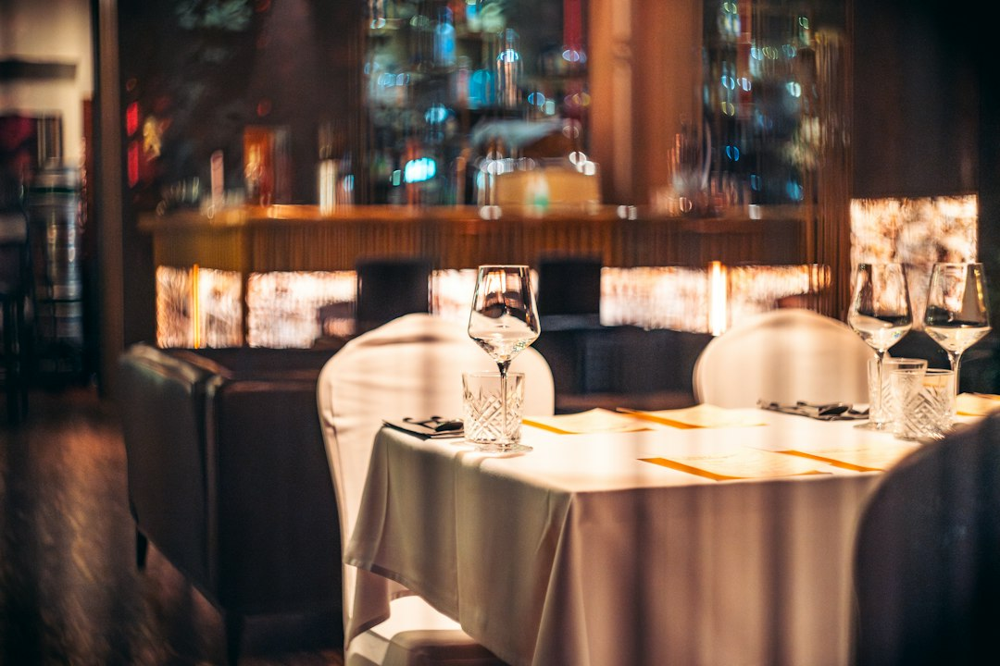

Ridurre Sprechi e Costi in Ho.Re.Ca.: Smart Experience / Taste Engine la Soluzione Innovativa per Ristoratori e Chef

Ottimizzare Gestione e Ridurre Sprechi in Ho.Re.Ca.: Guida Operativa per Ristoratori, Chef e Titolari di Locali
- Il menu tradizionale PDF crea inefficienze operative e sprechi di tempo nel servizio.
- Camerieri sovraccarichi e difficoltà nella comunicazione sugli allergeni aumentano i costi e l’insoddisfazione del cliente.
- Smart Experience / Taste Engine offre un e-menu interattivo con AI Maître Virtuale che riduce drasticamente sprechi, ottimizzando servizio e comunicazione a costi contenuti.
Analisi Approfondita: Come i Menu Tradizionali Penalizzano le Operazioni del Settore Ho.Re.Ca.
Nel contesto attuale della ristorazione, la gestione del menu rappresenta un nodo cruciale per l'efficienza operativa. L’uso prevalente di menu PDF statici e sgranati, spesso stampati o mostrati tramite tablet con scarsa interattività, genera una serie di problemi significativi. I clienti non ricevono un’esperienza coinvolgente e chiara, mentre il personale di sala è costretto a investire tempo prezioso per spiegare ingredienti, dettagli sui piatti e rischi legati alle allergie alimentari.
Questa situazione impatta direttamente la produttività: i camerieri risultano occupati più a svolgere funzione di informatori che a prendersi cura dell’accoglienza e del servizio personalizzato. Con l’aumento della domanda di trasparenza alimentare e di esperienze smart, i ristoratori e gli chef si trovano sotto pressione per adattarsi senza però avere strumenti tecnologici dedicati e facilmente integrabili.
Conseguenze e Costi di Non Agire: Sprechi di Tempo e Insoddisfazione Clienti Che Limitano il Profitto
Mantenere menu tradizionali in formato PDF determina diverse criticità operative: i camerieri sono rallentati nel loro lavoro, dilatando il servizio e aumentando i tempi di attesa per ogni tavolo. Questo si traduce in minore rotazione e in un calo potenziale del fatturato giornaliero.
Inoltre, la difficoltà nel comunicare chiaramente dettagli su piatti, allergeni ed abbinamenti con vini adeguati espone il locale a rischi legali e reputazionali. Il personale stressato e oberato non può dedicare attenzione specifica alle esigenze dei clienti; la loro esperienza percepita peggiora portando a recensioni negative e minor fidelizzazione.
Tutti questi aspetti generano costi nascosti: maggiore impiego di risorse umane, spreco di tempo prezioso, riduzione della qualità percepita del servizio e, infine, perdita di competitività in un mercato estremamente affollato e digitale.
Smart Experience / Taste Engine: La Soluzione Innovativa per Ottimizzare Ogni Aspetto della Gestione Ho.Re.Ca.
Smart Experience / Taste Engine di RM Studio si presenta come una risposta concreta e integrata ai problemi diagnosticati. È un e-menu interattivo che sfrutta l'intelligenza artificiale per diventare un vero Maître Virtuale in stile WhatsApp, in grado di interagire direttamente con il cliente attraverso messaggi semplici e immediati.
Le principali funzionalità sono:
- Interattività: il cliente esplora il menu in modo fluido, ricevendo dettagli esaustivi su ogni piatto, comprese informazioni sugli allergeni, senza dover aspettare l’intervento del personale.
- Abbinamento Vini: grazie al modulo Sommelier integrato, il sistema suggerisce in tempo reale i vini più adatti ad ogni portata, migliorando l’esperienza enogastronomica e il valore dello scontrino medio.
- Storytelling Multimediale: ogni piatto è accompagnato da uno storytelling dedicato, includendo foto, video dell’atmosfera e curiosità che coinvolgono emotivamente il cliente, aumentando la percezione qualitativa e la propensione all’acquisto.
Questa soluzione elimina il collo di bottiglia operativo dei camerieri, riduce drasticamente il tempo dedicato a spiegazioni ripetitive e minimizza gli errori di comunicazione, con evidenti vantaggi economici ed organizzativi.
| Caratteristiche | Gestione Tradizionale | Con Smart Experience / Taste Engine |
|---|---|---|
| Tipo di Menu | PDF statico, spesso sgranato | E-menu interattivo, aggiornabile in tempo reale |
| Interazione Cliente | Limitata, dipende dal cameriere | Maître Virtuale AI conversazionale |
| Informazioni Allergeni | Spiegazioni manuali e spesso incomplete | Dettagli precisi e automatici via chat |
| Abbinamento Vino | Sconsigliato o lasciato al cameriere | Consigli Sommelier AI integrati |
| Storytelling e Atmosfera | Assenti o poco coinvolgenti | Video e narrazione emozionale multimediale |
| Costo e Gestione | Alti costi indiretti, aggiornamenti manuali | Sblocco una tantum €390, nessun abbonamento |
💡 Ti è stato utile questo approfondimento?
Condividilo con un collega o un amico del settore Ristoratori, Chef, Titolari di Locali e Attività Ho.Re.Ca. a cui potrebbe interessare!
FAQ: Domande Frequenti su Smart Experience / Taste Engine per il Settore Ho.Re.Ca.
1. Quanto tempo richiede l’implementazione di Smart Experience nel mio locale?
L’installazione e configurazione sono rapide e semplici, generalmente completate in pochi giorni senza interruzione delle attività quotidiane.
2. Il sistema supporta più lingue per clienti internazionali?
Sì, Smart Experience è progettato per offrire una fruizione multilingua, migliorando l’esperienza per turisti e clienti stranieri.
3. Ci sono costi ricorrenti dopo l'acquisto del software?
No, il sistema prevede un solo sblocco una tantum a €390, senza abbonamenti o costi nascosti, con Jingle promozionale incluso.
Inizia Subito
Sblocco una tantum a €390.00 senza abbonamenti con Jingle promozionale incluso.
Fonti Ufficiali e Risorse Esterne
Scopri l'Intelligenza Artificiale per la tua attività
Ottimizza i processi e aumenta le vendite con le soluzioni B2B di RM Studio.
Scopri Smart Experience / Taste Engine